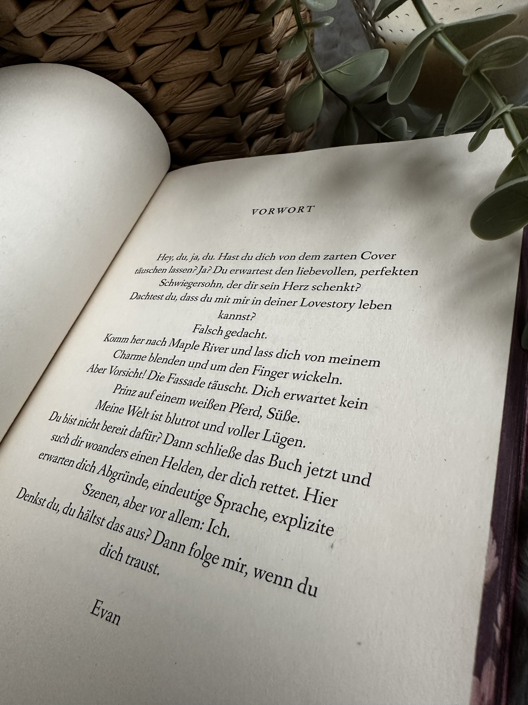
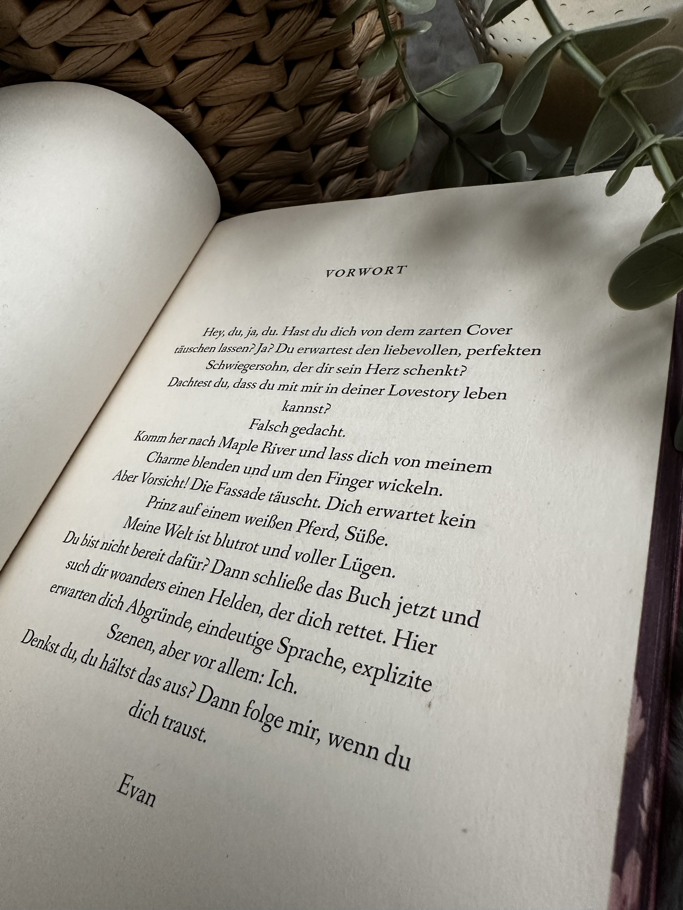

Rezensionsexemplare von Black Edition
Drewmore Dynasty von Kari Tenero
Fesselnde Dark Romance voller Spannung, Drama und überraschenden Wendungen.
Dieses Buch hat mich von der ersten Seite an in seinen Bann gezogen! Mit den beliebten Tropes wie Reverse Harem, Bad Boys und einer taffen Protagonistin bietet die Geschichte alles, was das Herz eines Dark Romance-Fans begehrt - und noch so viel mehr. Vivien und ihre Schwester Lexy sind eigentlich unzertrennlich, doch ihre Pläne geraten ins Wanken, als sie auf unterschiedliche Universitäten landen. Von diesem Moment an überschlagen sich die Ereignisse: An beiden Unis passieren mysteriöse Dinge, und plötzlich häufen sich rätselhafte Morde. Man hat als Leser ständig das Gefühl, dass nichts so ist, wie es scheint.
Besonders gelungen sind die intensiven dramatischen Entwicklungen. Die Wendungen werden immer krasser, und man wird regelrecht durch die Geschichte gejagt, während die Spannung kontinuierlich steigt. Auch der Spice ist hervorragend - perfekt in die düstere und gefährliche Atmosphäre eingebettet.
Die Charaktere sind stark und facettenreich. Vivien ist eine Protagonistin, die sich nicht unterkriegen lässt, auch wenn das Chaos um sie herum eskaliert. Die Männer, die sie umgeben, haben alle ihre eigenen Geheimnisse und Abgründe, was sie unwiderstehlich und zugleich bedrohlich macht. Die Mischung aus Leidenschaft, Gefahr und Geheimnissen hält einen pausenlos gefesselt.
Ich kann es kaum erwarten, wie die Geschichte weitergeht - der Cliffhanger am Ende hat mich sprachlos zurückgelassen! Für Fans von Dark Romance, die es dramatisch und spicy mögen, ist dieses Buch ein absolutes Muss!
Hunted Hearts Chronicles von Katelyn Erikson
Meine persönliche Dark Romance Erfolgsdilogie!
Darkside hat mich wirklich überrascht. Zu Beginn war ich unsicher, ob ich weiterlesen sollte - die düstere Atmosphäre und die eindringliche Triggerwarnung ließen mich zögern. Doch genau diese Warnung hat mich auch fasziniert und zum Weiterlesen motiviert, was ich keineswegs bereue! Erikson schafft es, eine Spannung aufzubauen, die die Leser:innen sofort in die düstere Welt von Sloane zieht.
Die Handlung dreht sich um Sloane, deren Vergangenheit sie Stück für Stück einholt. Schließlich überschlagen sich die Ereignisse - und als Leser:in fiebert man unweigerlich mit. Besonders beeindruckt hat mich der fesselnde Schreibstil von Erikson, der es schwer macht, das Buch zur Seite zu legen. Ihre kurzen, prägnanten Kapitel verleihen der Geschichte eine Dynamik, bei der man gar nicht merkt, wie schnell die Seiten verfliegen. Ehe man sich versieht, sind hundert Seiten vorbei, und man will unbedingt wissen, wie es weitergeht.
Es ist wichtig zu erwähnen, dass die Triggerwarnungen ernst genommen werden sollten, da Darkside viele intensive und potenziell verstörende Themen behandelt. Trotzdem habe ich selten eine Contentwarnung erlebt, die mich so sehr in den Bann gezogen hat.
Für mich ist Darkside eines der absoluten Jahreshighlights im Bereich Dark Romance, und Band 2 hat mich noch mehr mitgenommen. Der weitere Verlauf sowie das Ende der Geschichte habe ich absolut nicht kommen sehen! Ich hatte viele Vermutungen... aber ich lag so falsch! Nach all den Wendungen hatte ich schon die Befürchtung, dass es diesmal kein "Happy End" geben wird, doch nach noch drei Wendungen lagen meine Nerven blank! Wer düstere, emotionale Geschichten liebt und sich nicht vor schweren Themen scheut, wird hier definitiv auf seine Kosten kommen.
Lie to me softly von Lea R. Eden
 

Never judge a book by its cover!
Das Buch wirkt auf den ersten Blick wie eine leichte Vorstadt-Romanze, offenbart jedoch eine tiefgründige und düstere Geschichte. Die Protagonistin May sehnt sich nach einer schweren Vergangenheit nach Ruhe und einem Neuanfang in der Kleinstadt Maple River. So weit, so gut. Doch als sie auf Evan trifft, der anfangs wie der perfekte Partner für ein neues Kapitel scheint, stellt sich heraus, dass auch dieses scheinbar idyllische Leben voller Geheimnisse und Abgründe ist. Die Autorin schafft eine intensive, fesselnde Atmosphäre mit detailreichen und emotionalen Beschreibungen, die Mays innere Konflikte und Sehnsüchte spürbar machen. Besonders der gekonnt inszenierte Spice verleiht der Geschichte Tiefe, ohne das Gleichgewicht zu verlieren. Eden hat einen derart lockeren und flüssigen Schreibstil, sodass ich binnen eines Tages durch das Buch gerutscht bin. Ein packendes Leseerlebnis für Dark Romance-Fans - doch bitte die Triggerwarnungen beachten!
Regents von Isabelle North
Erstes Buch mit schwarzen Seiten - bei einem Verlag!
Das Buch entführt seine Leser:innen in eine düstere Welt voller Magie, Leidenschaft und Gefahren. Im Zentrum steht eine starke Protagonistin, die sich in einem komplexen Netz aus Machtspielen, Intrigen und Verlangen wiederfindet. Der Fantasy Dark Romance-Ansatz trifft genau ins Schwarze - besonders durch das ungewöhnliche Reverse Harem mit acht Vampiren, die alle auf ihre Weise faszinierend und gefährlich sind. Diese Dynamik zwischen der Protagonistin Savannah und den Vampiren ist nicht nur aufregend, sondern gibt der Handlung Tiefe und Spannung.
Das Setting in einer Dark Academy passt perfekt zum düsteren Ton des Buches. Die Atmosphäre ist unheimlich und geheimnisvoll, was das Gefühl von Bedrohung und Verführung verstärkt. Jagen und gejagt werden sorgt immer wieder für spannende Wendungen und heizt das Wolf-and-Rabbit-Spiel zwischen den Figuren an.
Die Geschichte ist nicht nur spannend, sondern auch sehr spicy - ein Balanceakt, den die Autorin meisterhaft beherrscht. Es gelingt ihr, die erotischen Momente in die Handlung zu verweben, ohne dass sie deplatziert wirken.
Das Ende hat mich mit einem Gefühl der Leere zurückgelassen, so sehr möchte ich wissen, wie es weitergeht. Die Wartezeit auf Band 2 wird eine Herausforderung.
Ein weiteres Highlight sind die wunderschönen schwarzen Seiten und Illustrationen, die das Leseerlebnis zu einem visuellen Genuss machen. Die ästhetische Gestaltung des Buches verleiht der dunklen Atmosphäre noch mehr Ausdruck. Dennoch muss ich anmerken, dass sich auf meinem Exemplar die silber aufgedruckte Schrift des Covers ablöst. Zudem muss ich gestehen, dass das Buch mit unter 500 Seiten deutlich schwerer ist als andere vergleichbare Bücher.
Scorpion's Secret von Kristin Glimmer
Spannende Mafia Dark Romance, die mich zudem sehr amüsiert hat!
In Scorpion's Secret begleiten wir Valentina, die mit ihrem besten Freund Roman in Russland eigentlich nur einen entspannten Urlaub machen wollte. Dann Roman wollte Valentina unbedingt seine Heimat zeigen. Doch nun werden sie von einnem russischen Mafiaboss entführt, der Roman gefangen hält und Valentina zu seinem größten Feind und dessen Bruder in die Türkei schickt, um diesen zu töten.
Ich wurde in wechselnden POV's durch ihre Vergangenheit begleitet und erlebte auch die ein oder andere spicy Szene, die perfekt platziert wurde.
Ich persönlich habe die beiden Brüder lieben gelernt, doch ich bin mir sicher, dass sich das Blat im nächsten Band noch wenden wird, da ich mit einem offenen Ende sprachlos zurückgelassen wurde.
Aber ich muss noch dazu sagen, dass es (in meinen Augen, da nicht jeder mein Humor teilt) ziemlich lustige Szenen gab, was mich positiv überrascht hat.
Kann Valentina den Brüdern vertrauen und ihren besten Freund retten? Eine absolute 5-Sterne Dark Romance mit den Tropes aus Mafia, Reverse Harem, Secret Identity, Bad Hero, Entführung und Obsession.
Obsessed von Don Both & Maria O'Hara
Ich bin wie im Rausch - mit Mister Rush. Wie passend.
- "Obsessed" goes Black Edition! -
Obsessed ist ein fesselnder Roman, der sich um Olivia, eine alleinerziehende Mutter, und ihren mysteriösen Boss Keaton Rush dreht. Was auf den ersten Blick wie eine gewöhnliche Liebesgeschichte scheint, entpuppt sich schnell als dunkle und intensive Reise in die Abgründe der menschlichen Psyche – vor allem durch Keaton, der sich als Olivias heimlicher Stalker herausstellt.
Die Geschichte wird aus zwei Perspektiven erzählt, was dem Leser nicht nur einen Einblick in Olivias Leben, sondern auch in Keatons verstörende Gedankenwelt gibt. Besonders Keatons Perspektive, bei der der Leser direkt angesprochen wird, erzeugt eine besondere Nähe – fast schon beängstigend intim. Dieser erzählerische Kniff sorgt für Gänsehaut und lässt einen die Intensität seiner Besessenheit und Psyche hautnah spüren.
Der Schreibstil des Buches zieht einen regelrecht in den Bann. Es ist unmöglich, das Buch aus der Hand zu legen, da jedes Kapitel mit einer Wendung endet, die einen förmlich zwingt, weiterzulesen. Besonders erwähnenswert ist die Leidenschaft, die in den Spice-Szenen zum Ausdruck kommt – eine Szene, die mich mitten in der Nacht um halb zwei völlig wach gehalten hat.
Keaton ist ohne Zweifel eine wandelnde red flag – gefährlich, obsessiv und intensiv. Doch genau das macht ihn als Charakter so faszinierend. Man wird unweigerlich in seinen Bann gezogen, auch wenn man weiß, dass man es eigentlich besser wissen müsste.
Abschließend lässt sich sagen, dass Obsessed ein düsterer und elektrisierender Roman ist, der die Leser gleichermaßen schockiert und begeistert. Wer auf intensive Geschichten mit psychologischer Tiefe und prickelnder Romantik steht, wird hier voll auf seine Kosten kommen. Aber Vorsicht: Dieses Buch könnte eure Nachtruhe rauben – und das auf die bestmögliche Weise!